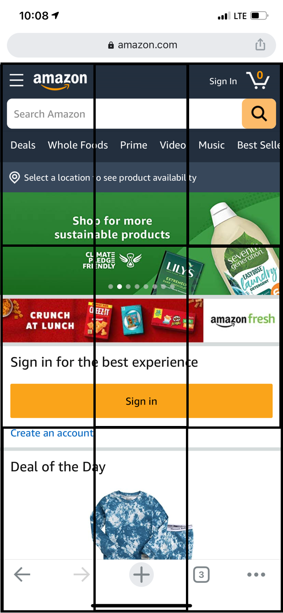

Design Principles Document
Paulo Dallastra
Hick's Law
PluralSight - Website
Description: The idea of the website is to keep it simple, and give the most important tools available to the user. In this case, there is only a slogan, a quick description about their work, a button to check out their plans, and a chat for questions.
The Rule of Thirds
Amazon - Website
Description: They placed different types of content based on the thirds. The Amazon logo is placed on the first block, which is the most scanned placed on the website. The other parts are also placed inside of the blocks giving a great view experience as well.
White Space and Clean Design
Decolar - Website
Description: It is great how the use of the White Space and Clean Design for all the possible options the user could look at. There are icons to be selected and inputs to be filled, and all of them have the technique applied to help the users with their experiences.